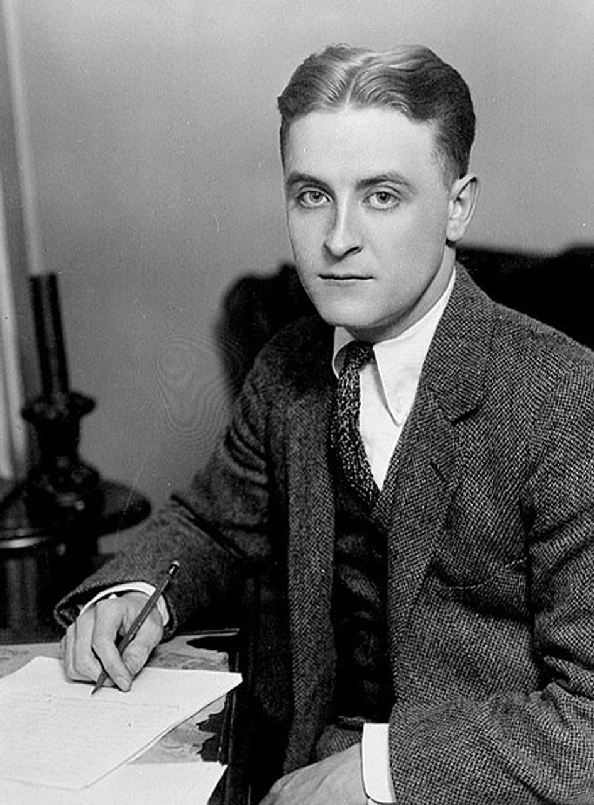

Фрэнсис Скотт Фицджеральд
Годы жизни: 1896-1940
Годы творчества: 1920-1940
Жанры: роман, рассказ
Писатель Фрэнсис Скотт Кей Фицджеральд родился в городе Сент-Пол (США) 24 сентября 1896 года. Семья его имела ирландское происхождение и была обеспеченной. Это позволило юноше получить престижное образование.
Сначала Фицджеральд обучался в Академии Сент-Пола, потом в Newman School, а позже в Принстонском университете. Так и не дождавшись выпускных экзаменов там, в 1917 году он ушел в армию добровольцем. Во время службы молодой человек встретил Зельду Сейр. Демобилизовавшись в 1919 году, он сделал предложение девушке, но получил отказ от ее родителей.
Чтобы обеспечить себе финансовое благополучие и добиться руки Зельды, Фицджеральд уехал в Нью-Йорк и поступил на работу в рекламное агентство. Все его попытки заслужить литературное признание тогда обернулись крахом.
Успех и славу Фицджеральду принес роман «По эту сторону рая» (1920). В результате писатель смог жениться на Зельде, а его произведения стали востребованными.
В 1922 увидел свет новый роман писателя «Прекрасные и проклятые». Супруги в то время жили на Манхеттене, нередко становясь героями светских хроник.Вскоре Фицджеральды переехали в Европу и обосновались в Париже. Там был опубликован роман «Великий Гэтсби» (1925), считающийся теперь шедевром американской литературы времен «эпохи джаза».
В 1925 году в семье Фицджеральдов произошла трагедия: Зельда пережила приступ помутнения рассудка. Позже у женщины диагностировали шизофрению. Из-за болезни супруги писатель начал злоупотреблять спиртным. В 1934 году был напечатан новый роман Фицджеральда «Ночь нежна», но он уже не имел большого успеха. В 1937 году писатель решил устроиться голливудским сценаристом. Там он познакомился с Шилой Грэм.
Влюбившись в девушку, Фицджеральд последние годы жизни проводит вместе с ней. Тогда же он пишет свой роман «Последний магнат», который так и остается незаконченным, поскольку 21 декабря 1940 года писатель умирает от сердечного приступа.